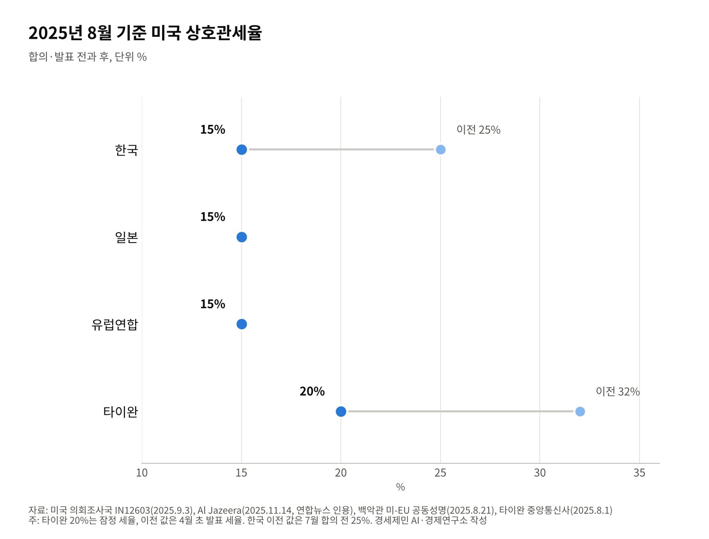

[정상외교] 한미정상회담 해외언론 다시 읽기, 1년 뒤 남은 것과 사라진 것
2025년 8월 25일 회담을 미국·일본·중국·북한·타이완 언론은 어떻게 봤나
'숙청' 경고에서 환대로, 조선 1500억달러와 김정은 재회담 제안에 쏠린 눈
원문을 다시 찾아 확인한 보도만 남겨, 러시아 매체 등은 원문 확인 못 해 제외
AI경제저널=김갑봉 기자 | 2025년 8월 25일 워싱턴 백악관에서 이재명 대통령과 도널드 트럼프 대통령이 처음 만났다. 같은 회담을 두고 나라마다 언론의 눈길이 다른 곳에 머물렀다. 그 차이에 각국의 이해관계가 비친다.
이 연구소는 당시 7개국 보도를 분석한 원고를 1년 2개월 만에 다시 열었다. 인용한 외신을 원문과 하나씩 대조했다. 원문을 찾은 보도만 남기고, 찾지 못한 보도는 뺐다.
미국 통신사·방송, 일본 교도통신, 중국 중앙방송, 북한 조선중앙통신, 타이완 중앙통신사가 남았다. 러시아 타스·베스티 보도와 일부 미국·일본·중국 신문 인용은 원문을 다시 찾지 못해 이 글에서 뺐다.
미국, 경고에서 환대로
미국 언론의 첫 문장은 회담 전 소셜미디어 글이었다. 트럼프 대통령은 회담 몇 시간 전 「한국에서 무슨 일이 벌어지나? 숙청이나 혁명 같다」고 썼다. 그런 상황에서는 한국과 사업을 할 수 없다고도 했다.
AP통신은 같은 날 「트럼프의 초기 경고가 아첨 뒤 따뜻한 환영으로 바뀌었다」는 제목을 달았다. 이 대통령이 트럼프 대통령을 한껏 칭찬하자 적대적 회담의 가능성이 사라졌다고 썼다.
AP는 트럼프 대통령이 오산 공군기지 임대를 끝내고 땅의 소유권을 갖고 싶다고 한 발언도 전했다. 악시오스는 트럼프 대통령이 회담에서 교회 압수수색 소문을 「오해」라며 어조를 누그러뜨렸다고 보도했다.
NBC 방송은 「트럼프를 사로잡을 한국의 제안, 마스가(MASGA·미국 조선업을 다시 위대하게)」를 제목으로 뽑았다. 미국 조선소 건설, 인력 양성, 미 해군 함정 정비가 담긴 구상이라고 설명했다.
NBC는 한국 정치 상황을 짚은 배종찬 씨의 말도 실었다. 「마스가가 트럼프 대통령을 상대하는 데 필요한 모든 것을 해결해 주지는 못한다」는 평가였다.
로이터는 8월 26일 「한국이 문제 많은 미국 조선업 부활에 크게 걸었다」고 분석했다. 유엔무역개발회의 자료로 2024년 미국의 세계 조선 점유율은 0.04%다. 중국과 한국이 상업용 선박 건조의 83%를 맡는다.
한화는 2024년 사들인 필라델피아 조선소에 최대 50억달러를 들여 한 해 두 척이 안 되는 건조량을 20척까지 늘릴 계획이다. 로이터는 미국 항구 사이 화물을 미국에서 지은 배로만 나르게 한 1920년 존스법을 법적 제약으로 짚었다.
미국 의회조사국은 9월 3일 보고서에서 회담 뒤 두 정부가 공동문서를 내지 않았다고 정리했다. 7월 무역·투자 합의를 마무리하지 못했기 때문으로 알려졌다고 적었다. 미국 언론이 거래에 주목한 데는 이유가 있었다.
일본, 연내 북미 회담과 그 실현 가능성
일본 교도통신은 8월 26일 트럼프 대통령이 김 위원장과 「올해 안에 만나고 싶다」고 했다고 전했다. 10월 말 한국 아시아태평양경제협력체(APEC) 정상회의 때 만날 가능성도 내비쳤다고 썼다.
교도는 실현 전망은 불투명하다고 덧붙였다. 북한이 대화의 전제로 핵보유 인정을 요구하기 때문이다. 주한미군 감축 질문에 트럼프 대통령이 「지금은 말하고 싶지 않다」며 답을 피한 대목도 실었다.
뉴스위크 일본판은 이 대통령의 「이례적 제안」에 주목했다. 이 대통령이 북한에 트럼프 대통령의 리조트를 짓고 골프를 칠 수 있다며 「역사적 평화 조성자」 역할을 청했다고 전했다.
일본 언론이 북미 회담에 눈을 둔 까닭은 일본의 안보 계산과 맞닿아 있다. 북한의 핵과 미사일은 일본 열도를 직접 겨눈다. 북미 대화의 향방이 일본의 대북 정책 여지를 좌우한다.
중국, 관영 방송의 짧은 요약
중국 중앙방송(CCTV) 뉴스는 8월 26일 트럼프 대통령의 말을 짧게 옮겼다. 「올해 그를 만나고 싶다」, 김 위원장과 관계가 「아주 좋다」는 발언이다. 베이징 신경보와 후난일보 계열 매체가 이를 그대로 실었다.
CCTV 요약은 트럼프 대통령이 한국과의 무역협정 재협상을 개의치 않는다고 한 말도 담았다. 러시아-우크라이나 분쟁 해결이 예상보다 어렵다고 한 대목도 넣었다. 두 기사에서 한미동맹을 평가한 논평은 보이지 않았다.
중국의 관심은 두 갈래로 읽힌다. 북미 대화가 다시 열리면 중국이 북한 문제에서 밀려나지 않아야 한다. 미국의 관세 압박이 한국에 어떻게 작용하는지도 지켜봐야 한다.
북한, '위선자'로 맞받다
북한 조선중앙통신은 8월 27일 논평을 냈다. 알자지라가 전한 논평은 이 대통령이 미국에서 「위선자의 본색」을 드러냈다고 했다. 비핵화 발언은 「궤변」이라고 했다.
논평은 비핵화가 이론적·실천적·물리적으로 「소멸했다」고 주장했다. 핵보유국 지위는 「불가피한 선택」이라고 했다. 이틀 앞선 8월 25일에도 조선중앙통신은 도쿄 한일 정상회담을 들어 이 대통령을 비난했다고 교도통신이 전했다.
트럼프 대통령은 대화를 말했지만 북한은 비핵화라는 전제부터 거부했다. 교도가 짚은 「불투명」의 근거가 여기에 있었다. 회담의 온기가 평양까지 닿지 않았다.
타이완, 15%와 20%의 거리
타이완 중앙통신사는 8월 26일 이 대통령이 「젤렌스키의 순간」을 아슬아슬하게 피했다고 썼다. 2025년 2월 트럼프 대통령이 젤렌스키 우크라이나 대통령을 공개 질책한 장면을 떠올린 표현이다.
이 대통령도 전략국제문제연구소(CSIS) 행사에서 참모들이 젤렌스키의 순간을 걱정했다고 말했다. 중앙통신사는 방위비 분담, 관세 협정 세부사항, 핵연료 재처리와 조선 규제는 아직 풀리지 않았다고 정리했다.
타이완의 계산은 관세율에서 시작한다. 중앙통신사는 8월 1일 타이완의 잠정 상호관세가 4월 초 32%에서 20%로 내려왔지만 한국과 일본의 15%보다 높다고 보도했다. 타이완 정부는 최소 15%를 목표로 협상을 잇겠다고 했다.

타이완 언론이 한국의 투자 약속을 들여다본 이유다. 같은 15%를 얻으려면 무엇을 내놓아야 하는지가 타이완의 다음 협상 의제였다.
1년 뒤, 거래는 문서가 되고 회담은 남았다
외신이 주목한 두 줄기는 1년 사이 다른 길을 걸었다. 거래는 문서가 됐다. 두 정상은 2025년 10월 29일 경주에서 다시 만났고, 백악관은 11월 13일 공동 설명자료를 냈다.
상호관세와 자동차 관세 15%, 조선 1500억달러와 전략투자 2000억달러가 담겼다. 미국은 한국의 핵추진 공격잠수함 건조를 승인했다. 다이빙 주한 중국대사는 이 협력이 세계 핵비확산 체제와 관련된다고 반응했다.
두 정상은 2026년 9월 22일 뉴욕에서 세 번째로 만났다. 트럼프 대통령은 북한과의 대화 의지를 다시 밝혔다. 그러나 북미 정상회담은 아직 열리지 않았다.
11월 18~19일 중국 선전에서 APEC 정상회의가 열린다. 트럼프 대통령은 10월 19일 그 자리에서 김 위원장을 만나느냐는 물음에 「모르겠다」고 답했다. 성사되면 2019년 판문점 이후 7년 만이다.
1년 전 외신은 한국이 무엇을 내주고 무엇을 받았는지, 그리고 김 위원장과 다시 만날지를 물었다. 앞의 물음에는 문서가 답했다. 뒤의 물음은 여전히 열려 있다. 외신의 시선을 다시 읽으면 한국 외교가 풀 숙제의 목록이 보인다.
참고문헌
기관 자료
- The White House, "Joint Fact Sheet on President Donald J. Trump's Meeting with President Lee Jae Myung", 2025년 11월 13일. https://www.whitehouse.gov/fact-sheets/2025/11/joint-fact-sheet-on-president-donald-j-trumps-meeting-with-president-lee-jae-myung/
- The White House, "Joint Statement on a United States-European Union Framework on an Agreement on Reciprocal, Fair, and Balanced Trade", 2025년 8월 21일. https://www.whitehouse.gov/briefings-statements/2025/08/joint-statement-on-a-united-states-european-union-framework-on-an-agreement-on-reciprocal-fair-and-balanced-trade/
- Congressional Research Service, "The August 2025 U.S.-South Korea Summit"(IN12603), 2025년 9월 3일. https://www.everycrsreport.com/reports/IN12603.html
언론 보도
- Seung Min Kim, "Trump's initial warning to South Korea's Lee turns into warm welcome after flattery", AP(ABC30 게재), 2025년 8월 25일. https://abc30.com/amp/post/trumps-initial-warning-south-koreas-lee-turns-warm-welcome-flattery/17646668/
- Josephine Walker, "Trump eases tone on South Korea instability after meeting President Lee", Axios, 2025년 8월 25일. https://www.axios.com/2025/08/25/trump-blasts-south-korea-unstable-before-meeting
- Jennifer Jett·Stella Kim, "South Korea's proposal to win over Trump: 'Make America Shipbuilding Great Again'", NBC News, 2025년 8월. https://www.nbcnews.com/world/asia/south-korea-lee-meets-trump-make-america-shipbuilding-great-again-rcna226909
- Reuters(Joyce Lee 외), "South Korea Bets Big on Reviving Troubled U.S. Shipbuilding to Woo Trump", gCaptain 게재, 2025년 8월 26일. https://gcaptain.com/south-korea-bets-big-on-reviving-troubled-u-s-shipbuilding-to-woo-trump/
- 共同通信, 「金正恩氏と対話『年内に』 トランプ氏、実現は不透明」, 熊本日日新聞 게재, 2025년 8월 26일. https://kumanichi.com/articles/1873331
- 共同通信, 「北朝鮮が日米韓の連携けん制 李在明大統領を非難する記事」, 熊本日日新聞 게재, 2025년 8월 25일. https://kumanichi.com/articles/1872501
- ニューズウィーク日本版, 「『トランプ・ワールドを北朝鮮に』李大統領が異例の提案」, 2025년 8월 26일. https://www.newsweekjapan.jp/articles/-/18611
- 央视新闻(徐德智), 「特朗普：希望今年与金正恩会面」, 新京报 게재, 2025년 8월 26일. https://m.bjnews.com.cn/detail/1756163610129742.html
- 央视新闻, 「想见金正恩、考虑从韩国买船 特朗普见李在明都说了啥？一文了解」, 新湖南 게재, 2025년 8월 26일. https://m.voc.com.cn/xhn/news/202508/30295922.html
- Al Jazeera, "North Korea blasts South Korea's Lee as 'confrontation maniac'", 2025년 8월 27일. https://www.aljazeera.com/news/2025/8/27/north-korea-blasts-south-koreas-lee-as-confrontation-maniac
- 中央社, 「李在明與川普白宮相見歡 驚險躲過『澤倫斯基時刻』」, 2025년 8월 26일. https://www.cna.com.tw/news/aopl/202508260206.aspx
- 中央社, 「台灣暫時性稅率20% 許舒博：盼補考後稅率與日韓齊平」, 2025년 8월 1일. https://www.cna.com.tw/news/afe/202508010068.aspx
- Al Jazeera, "US, South Korea to 'move forward' on building nuclear-powered submarines", 2025년 11월 14일. https://www.aljazeera.com/news/2025/11/14/us-south-korea-to-move-forward-on-building-nuclear-powered-submarines
- The Korea Times(연합뉴스), "Trump reaffirms commitment to dialogue with N. Korea during summit with Lee: Seoul", 2026년 9월 23일. https://www.koreatimes.co.kr/foreignaffairs/20260923/trump-reaffirms-commitment-to-dialogue-with-n-korea-during-summit-with-lee-seoul
- The Korea Times, "Trump's 'I don't know' clouds prospect of meeting Kim Jong-un at APEC", 2026년 10월 20일. https://www.koreatimes.co.kr/foreignaffairs/northkorea/20261020/trumps-i-dont-know-clouds-prospect-of-meeting-kim-jong-un-at-apec
[사진 출처]
- [사진1] The White House, "President Donald Trump hosts a bilateral meeting with President Lee Jae-myung of the Republic of Korea (54748585639).jpg", 위키미디어 공용, 퍼블릭 도메인. https://commons.wikimedia.org/wiki/File:President_Donald_Trump_hosts_a_bilateral_meeting_with_President_Lee_Jae-myung_of_the_Republic_of_Korea_(54748585639).jpg
※ 이 기사는 AI 프로그램 클로드를 활용해 작성했습니다.
관련기사
- [정상외교] 같은 동맹 같은 청구서, 유럽이 한국의 대미 협상을 지켜본 이유
- [정상외교] 2차 한중정상회담 아홉 달, 서해에서 옮겨진 것과 남은 것
- [정상외교] 한중 하늘길 7년 만에 넓혔지만 자유화는 20년째 시범, 비자가 먼저 열린 이유
- [동맹과 국방] 군사력 세계 5위 한국, 자주국방은 어디까지 왔고 동맹은 무엇을 요구하나
저작권자 © AI경제저널 무단전재 및 재배포, AI학습 및 활용 금지